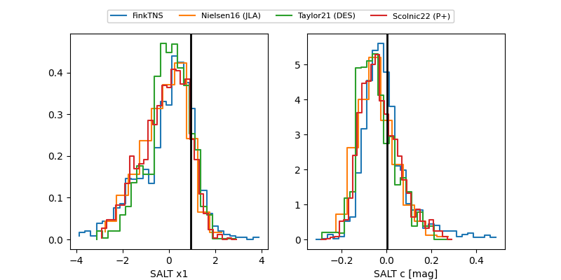

FINK: ZTF25ablulax
Lasair: ZTF25ablulax
ALeRCE: ZTF25ablulax
TNS: 2025wyu
YSE: 2025wyu
ZTF25ablulax (ztf,fink)
2025wyu (tns,yse)
equatorial (ra, dec) = (12.5075,+25.57738)
galactic (l, b) = (122.5328,-37.29327)

last atlasc=19.09, atlaso=19.21, ztfg=19.22, ztfr=19.06
1 atlasc, 1 atlaso, 8 ztfg, 11 ztfr detections